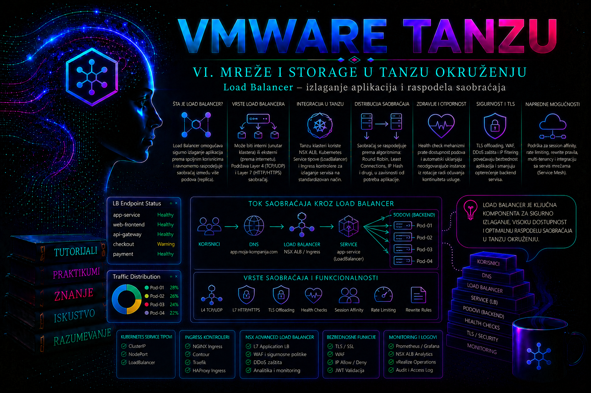

VMware & Tanzu

Arhitektonska odluka: LoadBalancer Service, Ingress ili Gateway API
Eksterni pristup nije jedan Kubernetes objekat, već projektovana ulazna putanja kroz više administrativnih domena. Pre pisanja manifesta potrebno je odlučiti da li aplikaciji treba zaseban Layer 4 VIP, zajedničko HTTP/HTTPS rutiranje ili savremeniji, ulogama razdvojen model Gateway API-ja. Pogrešan izbor ne mora odmah izazvati kvar, ali kasnije povećava potrošnju IP adresa, broj pravila, operativni rizik i složenost promene.
| Mehanizam | Najprimerenija namena | Ključna zavisnost | Važno ograničenje |
|---|---|---|---|
Service tipa LoadBalancer |
Zaseban TCP/UDP servis, poseban VIP, ne-HTTP protokol ili stroga izolacija | Load-balancer provider, VIP pool, routing i health monitor | Svaki servis može trošiti poseban VIP i infrastrukturne objekte |
Ingress |
Deljeni HTTP/HTTPS ulaz sa host, path i TLS pravilima | Instaliran Ingress Controller i odgovarajući IngressClass |
API je stabilan, ali funkcionalni skup zavisi od kontrolera i anotacija; Ingress API je zamrznut za nove mogućnosti |
| Gateway API | Delegiranje između infrastrukturnog i aplikacionog tima, više listener-a i izražajnije politike rutiranja | Gateway API CRD-ovi i podržana implementacija/kontroler | Nije automatski prisutan u svakom VKS izdanju; podrška i conformance moraju se proveriti po verziji |
U VCF 9.x dokumentaciji pojavljuje se naziv VMware vSphere Kubernetes Service (VKS), dok se u starijim podržanim granama i dalje sreću vSphere with Tanzu, Tanzu Kubernetes Grid Service i TKG. Isto tako, proizvod koji se ranije nazivao NSX Advanced Load Balancer danas se dokumentuje kao VMware Avi Load Balancer. Naziv nije dovoljan dokaz kompatibilnosti: administrator mora proveriti tačan VCF/VKS release, Kubernetes verziju, izdanje Avi Controller-a i AKO-a, paket Contour-a i licencu pre primene anotacija ili naprednih funkcija.
Uloga Load Balancer-a u Tanzu okruženju
Load Balancer omogućava da aplikacija pokrenuta u Kubernetes klasteru dobije stabilnu pristupnu tačku izvan klastera i da se dolazni saobraćaj raspodeli na raspoložive instance aplikacije. U Kubernetes-u se ova funkcija najčešće zahteva objektom Service tipa LoadBalancer. Kubernetes definiše željeno stanje, ali stvarni virtuelni IP, pravila prosleđivanja, health check mehanizme i data-plane komponente obezbeđuje integrisani load-balancer provajder.
U VMware i Tanzu arhitekturama provajder može biti VMware Avi Load Balancer, ranije nazivan NSX Advanced Load Balancer, NSX mrežne komponente ili drugo podržano rešenje povezano sa konkretnim modelom klastera. U novijim VMware Cloud Foundation izdanjima administrator će sresti naziv vSphere Kubernetes Service, dok starija okruženja i dokumentacija koriste nazive vSphere with Tanzu, Tanzu Kubernetes Grid Service ili Tanzu Kubernetes Grid. Kubernetes princip ostaje isti, ali način instalacije kontrolera, dodela IP opsega, licence i podržane anotacije zavise od platforme i verzije.
Važno je razlikovati tri nivoa. Kubernetes Service bira podove preko labela i obezbeđuje stabilan servisni identitet. Integracioni kontroler posmatra Kubernetes API i prevodi zahtev u konfiguraciju infrastrukturnog Load Balancer-a. Data plane, na primer Avi Service Engine, prima pakete na virtuelnoj IP adresi i prosleđuje ih odgovarajućim backend odredištima. Zbog toga uspešno kreiran Kubernetes objekat još ne dokazuje da je aplikacija dostupna korisnicima.
Load Balancer nije zamena za Ingress ili Gateway API. Servis tipa LoadBalancer najčešće pruža Layer 4 izlaganje pojedinačnog servisa po TCP ili UDP portu. Ingress omogućava Layer 7 HTTP/HTTPS pravila, kao što su rutiranje prema host imenu, URL putanji, TLS terminacija i deljenje jedne spoljne adrese između više aplikacija. Gateway API proširuje taj model eksplicitnim ulogama i resursima kao što su GatewayClass, Gateway i HTTPRoute. Direktan LoadBalancer Service opravdan je za aplikacije kojima je potreban poseban VIP, ne-HTTP protokol, jednostavno TCP izlaganje ili jasno izolovana mrežna granica.
Kako Kubernetes obrađuje Service tipa LoadBalancer
Kada administrator primeni manifest sa spec.type: LoadBalancer, Kubernetes kreira standardni Service i upisuje zahtev u API. Kontroler odgovarajućeg provajdera registruje promenu, rezerviše ili bira virtuelnu IP adresu iz dozvoljenog VIP opsega, kreira frontend listener, backend pool i health monitor, a zatim dodeljenu adresu upisuje u status.loadBalancer.ingress.
U mnogim implementacijama Kubernetes istovremeno dodeljuje ClusterIP i jedan ili više NodePort portova. Spoljni Load Balancer tada šalje saobraćaj prema node adresama i dodeljenom NodePort-u, dok Kubernetes mrežni sloj usmerava zahtev do jednog od spremnih podova. Neki provajderi podržavaju direktno usmeravanje prema podovima ili drugačiji data path, pa administrator ne sme pretpostaviti arhitekturu bez provere dokumentacije i stvarne konfiguracije klastera.
| Element | Uloga | Administratorska provera |
|---|---|---|
ClusterIP |
Stabilna interna adresa Kubernetes servisa | kubectl get service |
NodePort |
Port na node-ovima koji se može koristiti kao backend odredište | kubectl get service -o yaml |
| VIP | Adresa kojoj pristupaju korisnici ili nadređeni mrežni sistemi | status.loadBalancer.ingress i konzola provajdera |
| Backend pool | Skup node-ova, podova ili drugih odredišta koja primaju saobraćaj | Provajderska konzola, API i health status |
| EndpointSlice | Aktuelna odredišta izabrana Service selector-om | kubectl get endpointslice |
Polje selector je jedna od najvažnijih tačaka konfiguracije. Ako ne odgovara labelama podova, Service može imati VIP i otvoren port, ali bez backend endpointa. U tom slučaju problem nije u Load Balancer-u, već u vezi između servisa i workload-a. Administrator zato dijagnostiku započinje od podova i EndpointSlice objekata, a ne od spoljne IP adrese.
Raspodela saobraćaja i očuvanje izvorne IP adrese
Polje externalTrafficPolicy određuje kako se obrađuje saobraćaj koji stiže izvan klastera. Vrednost Cluster omogućava da bilo koji node koji primi zahtev prosledi saobraćaj do spremnog poda na bilo kom node-u. Time se obično postiže ravnomernija iskorišćenost backend-a, ali može nastati dodatni mrežni skok i izvorna IP adresa klijenta može biti zamenjena adresom posrednog sistema.
Vrednost Local ograničava prosleđivanje na podove koji se nalaze na node-u koji je primio zahtev. Ovo može očuvati izvornu adresu klijenta i ukloniti dodatni međunodeovski skok. Međutim, raspodela opterećenja zavisi od toga na kojim node-ovima postoje spremni podovi. Node bez lokalnog endpointa ne sme primati korisnički saobraćaj.
Kada je izabrano externalTrafficPolicy: Local, Kubernetes može dodeliti poseban healthCheckNodePort. Spoljni Load Balancer koristi taj port da utvrdi koji node-ovi imaju lokalne spremne endpoint-e. Blokiran health check, pogrešan firewall ili nedostupan node može zato izbaciti ispravan backend iz pool-a.
Local nije automatski bolji izbor. Za malu aplikaciju sa dve replike raspoređene na velikom broju node-ova samo dva node-a mogu biti aktivni backend-i. Pre održavanja node-a ili smanjenja broja replika može doći do neravnomerne raspodele i gubitka kapaciteta. Administrator treba da uskladi broj replika, pod anti-affinity ili topology spread pravila, ponašanje health monitora i očekivani korisnički saobraćaj.
Arhitektura VMware Avi Load Balancer integracije
Tipična Avi arhitektura sadrži Controller i jedan ili više Service Engine sistema. Controller upravlja konfiguracijom, analitikom i životnim ciklusom objekata, dok Service Engine predstavlja data plane kroz koji prolazi aplikacioni saobraćaj. Kubernetes integraciona komponenta prati Service i druge mrežne objekte i kreira odgovarajuće virtual service, pool i monitor objekte.
Produkcioni dizajn mora unapred definisati upravljačku mrežu, data mrežu, VIP mrežu, rutiranje, DNS, firewall pravila, MTU, kapacitet Service Engine grupe i raspoloživi IP opseg. VIP opseg ne sme da se preklapa sa node, pod, servisnim ili DHCP opsezima. Mrežna infrastruktura mora znati kako da dostavi pakete do VIP mreže, a povratna putanja mora biti simetrična ili podržana izabranim dizajnom.
Jedan od čestih modela je one-arm implementacija, u kojoj Service Engine koristi data interfejs za prijem i prosleđivanje saobraćaja kroz povezanu mrežu. Multi-arm model koristi odvojene mrežne segmente za frontend i backend tokove. Izbor utiče na rutiranje, bezbednosne zone, broj interfejsa i operativnu složenost. Administrator Kubernetes klastera ne treba samostalno da menja ovaj dizajn bez koordinacije sa mrežnim, virtuelizacionim i bezbednosnim timovima.
U velikim okruženjima IP adrese, Service Engine resursi i virtual services predstavljaju ograničene infrastrukturne kapacitete. Nekontrolisano kreiranje zasebnog LoadBalancer servisa za svaku web komponentu troši VIP adrese i povećava broj objekata koje treba pratiti. Za veći broj HTTP aplikacija obično je ekonomičniji centralno upravljan Ingress ili Gateway sloj, dok se zasebni VIP-ovi rezervišu za servise koji zahtevaju izolaciju ili poseban protokol.
Preduslovi, prava i bezbednosne granice
Pre izlaganja aplikacije administrator proverava da li klaster ima funkcionalan load-balancer provider, da li je dodeljen odgovarajući VIP opseg i da li namespace ili korisnička uloga dozvoljava kreiranje Service objekta tipa LoadBalancer. Potrebno je potvrditi i da mrežna pravila dozvoljavaju health check i korisnički tok između klijenata, VIP-a, Service Engine sistema, node-ova i pod mreže.
Minimalna Kubernetes prava za aplikacionog administratora obično obuhvataju čitanje podova, deployment-a, Service objekata, EndpointSlice objekata i događaja, kao i kreiranje i izmenu servisa u sopstvenom namespace-u. Pristup Avi Controller-u, promena VIP pool-a, Service Engine grupe ili globalnih mrežnih postavki pripada platformskom ili mrežnom administratoru.
Javno dostupna adresa ne sme se kreirati samo zato što tehnički postoji slobodan VIP. Potrebno je utvrditi klasifikaciju aplikacije, dozvoljene izvore, TLS odgovornost, zaštitu od zloupotrebe, logging, vlasnika DNS zapisa i proces odobrenja. Kubernetes Service pruža mrežno izlaganje, ali sam po sebi ne obezbeđuje WAF, autentikaciju korisnika, zaštitu API-ja ili potpunu Layer 7 politiku.
Polje loadBalancerSourceRanges može ograničiti dozvoljene izvorne opsege kada ga konkretni provajder podržava i pravilno primenjuje. Ono nije zamena za koordinisanu firewall politiku. Administrator mora proveriti stvarni rezultat na infrastrukturnom sloju, jer ignorisana anotacija ili nepodržano polje može ostaviti servis otvoren širem opsegu nego što je planirano.
Normalno stanje i simptomi problema
Normalno stanje podrazumeva da su podovi u stanju Running i Ready, da Deployment ima željeni broj dostupnih replika, da Service ima očekivani selector, da EndpointSlice sadrži spremne adrese, da je dodeljen spoljašnji VIP i da provajderski backend pool prikazuje zdrave članove. Funkcionalni test mora potvrditi i očekivani aplikacioni odgovor, a ne samo uspostavljanje TCP veze.
| Simptom | Najverovatniji sloj | Prva provera |
|---|---|---|
EXTERNAL-IP ostaje <pending> |
Provider, IP pool, kvota ili integracioni kontroler | Service događaji i logovi kontrolera |
| VIP postoji, ali nema konekcije | Routing, firewall, listener ili Service Engine | Putanja do VIP-a i status virtual service-a |
| VIP prihvata vezu, ali vraća grešku aplikacije | Pod, port ili aplikaciona konfiguracija | EndpointSlice, readiness i logovi aplikacije |
| Backend-i su označeni kao down | Health monitor, NodePort ili mrežna putanja | Monitor rezultat i firewall između data plane-a i backend-a |
| Radi samo deo zahteva | Jedan neispravan pod ili node | Pojedinačni endpoint-i i distribucija replika |
| Izvorna IP adresa nije vidljiva | SNAT ili externalTrafficPolicy |
Service specifikacija i provajderski profil |
Najčešća greška je preskakanje slojeva. Ako curl prema VIP-u ne uspe, nije dovoljno zaključiti da „Load Balancer ne radi”. Administrator mora utvrditi da li DNS vraća očekivanu adresu, da li postoji ruta, da li je port otvoren, da li virtual service sluša, da li backend health prolazi, da li Service ima endpoint-e i da li aplikacija odgovara na targetPort.
Integrisani praktikum: produkciono izlaganje web aplikacije
Poslovni i tehnički kontekst. Interni portal kompanije radi u workload klasteru tkg-prod-01. Aplikacija se nalazi u namespace-u prod-web, ima tri replike i sluša HTTP na portu 8080. Potrebno je obezbediti zaseban interni VIP dostupan samo iz korporativnih mreža 10.20.0.0/16 i 10.30.40.0/24. DNS naziv biće portal.corp.example, ali DNS zapis kreira drugi tim nakon tehničke validacije VIP-a.
Cilj. Kreirati Service tipa LoadBalancer, potvrditi dodelu VIP-a, proveriti backend endpoint-e i raspodelu zahteva, izvršiti negativni test pogrešnog porta i dokumentovati povratak na prethodno stanje.
Referentno okruženje. Kubernetes klaster ima integrisan VMware Avi Load Balancer, VIP opseg je već dodeljen platformi, a aplikacioni administrator nema pravo da menja Controller, Service Engine grupu ili mrežne pool-ove.
Preduslovi i prava. Kubeconfig mora pokazivati na tkg-prod-01. Korisnik mora imati pravo čitanja Deployment, Pod, Service, EndpointSlice i Event objekata, kao i kreiranja i izmene Service objekata u namespace-u prod-web. Mrežni tim je prethodno odobrio port 80 i navedene izvorne opsege. Datoteke praktikuma čuvaju se u direktorijumu ~/tashizza-labs/lesson-29/loadbalancer.
-
Potvrda konteksta i prava.
Pre bilo kakve promene proverava se identitet klastera i efektivno ovlašćenje. Pogrešan kubeconfig može izložiti aplikaciju u pogrešnom okruženju.
Validacija: kontekst mora odgovarati klasterumkdir -p ~/tashizza-labs/lesson-29/loadbalancer cd ~/tashizza-labs/lesson-29/loadbalancer kubectl config current-context kubectl cluster-info kubectl auth can-i get deployments -n prod-web kubectl auth can-i get endpointslices.discovery.k8s.io -n prod-web kubectl auth can-i create services -n prod-web kubectl auth can-i patch services -n prod-webtkg-prod-01, a svakaauth can-iprovera mora vratitiyes. Ako pravo za promenu servisa nedostaje, postupak se prekida i traži se namenski RoleBinding; ne koristi se širi administratorski nalog samo radi zaobilaženja RBAC kontrole. -
Snimanje početnog stanja.
Pre promene čuvaju se Deployment, podovi, postojeći servisi i događaji. Ovaj zapis je deo change evidencije i omogućava poređenje posle implementacije.
Validacija: Deployment mora postojati, a podovi treba da budukubectl get deployment web-portal -n prod-web -o yaml > before-web-portal-deployment.yaml kubectl get pods -n prod-web -l app=web-portal -o wide | tee before-pods.txt kubectl get services -n prod-web -o wide | tee before-services.txt kubectl get events -n prod-web --sort-by=.metadata.creationTimestamp | tee before-events.txtRunningi spremni. Proverava se i da nazivweb-portal-lbnije već zauzet.
Poslednja komanda treba da vratikubectl get deployment web-portal -n prod-web kubectl get pods -n prod-web -l app=web-portal kubectl get service web-portal-lb -n prod-webNotFound. Drugačiji rezultat zahteva proveru postojećeg vlasnika i konfiguracije; postojeći objekat se ne prepisuje bez analize. -
Provera labela i aplikacionog porta.
Service će birati podove sa labelom
app=web-portal. Pre kreiranja proverava se da li labela stvarno postoji i da li kontejner deklariše port 8080.
Validacija: očekuju se tri pod-a i container port 8080. Ako selector vraća nula podova, manifest servisa se ne primenjuje dok se ne utvrdi ispravna labela. Ako aplikacija sluša na drugom portu, menja sekubectl get pods -n prod-web -l app=web-portal --show-labels kubectl get deployment web-portal -n prod-web \ -o jsonpath='{range .spec.template.spec.containers[*]}{.name}{" ports="}{.ports}{"\n"}{end}'targetPort, a ne sama aplikacija bez odobrene promene. -
Kreiranje manifesta.
Koristi se
externalTrafficPolicy: Clusterjer je prioritet ravnomerna raspodela na sve tri replike, a očuvanje izvorne IP adrese nije zahtev aplikacije. Izvorni opsezi ograničeni su na odobrene korporativne mreže.
Validacija: server-side dry run mora proći bez greške. On potvrđuje API šemu i admission pravila, ali ne potvrđuje da provajder ima slobodnu IP adresu niti da podržava sva navedena polja.cat > web-portal-lb.yaml <<'EOF' apiVersion: v1 kind: Service metadata: name: web-portal-lb namespace: prod-web labels: app: web-portal exposure: internal spec: type: LoadBalancer externalTrafficPolicy: Cluster loadBalancerSourceRanges: - 10.20.0.0/16 - 10.30.40.0/24 selector: app: web-portal ports: - name: http protocol: TCP port: 80 targetPort: 8080 EOF kubectl apply --dry-run=server -f web-portal-lb.yaml -
Primena i praćenje dodele VIP-a.
Nakon uspešnog dry run-a objekat se kreira. Dodela adrese može zahtevati određeno vreme zbog rada integracionog kontrolera i infrastrukturnog provajdera.
Validacija: Service mora imatikubectl apply -f web-portal-lb.yaml kubectl get service web-portal-lb -n prod-web -o wide kubectl describe service web-portal-lb -n prod-webTYPE LoadBalancer, ClusterIP i posle obrade spoljašnju adresu. Adresa se čuva u promenljivoj tek kada postoji.
Ako provajder vraća hostname umesto IP adrese, koristi sekubectl wait --for=jsonpath='{.status.loadBalancer.ingress[0].ip}' \ service/web-portal-lb -n prod-web --timeout=180s VIP=$(kubectl get service web-portal-lb -n prod-web \ -o jsonpath='{.status.loadBalancer.ingress[0].ip}') test -n "$VIP" && printf 'Dodeljeni VIP: %s\n' "$VIP".status.loadBalancer.ingress[0].hostname. Ako Service ostane u stanju<pending>, ne menja se nasumično manifest; analiziraju se događaji i logovi kontrolera. -
Provera endpoint-a pre spoljnog testa.
Dodeljeni VIP nema vrednost ako Service nema zdrava odredišta.
Validacija: očekuju se tri endpoint adrese sa stanjemkubectl get endpointslice -n prod-web \ -l kubernetes.io/service-name=web-portal-lb -o wide kubectl get endpointslice -n prod-web \ -l kubernetes.io/service-name=web-portal-lb \ -o jsonpath='{range .items[*].endpoints[*]}{.addresses[0]}{" ready="}{.conditions.ready}{" node="}{.nodeName}{"\n"}{end}'ready=true. Manji broj zahteva proveru readiness probe-a i odgovarajućih podova.kubectl get pods -n prod-web -l app=web-portal -o wide kubectl describe pods -n prod-web -l app=web-portal -
Funkcionalni test iz dozvoljene mreže.
Test se izvršava sa administrativne stanice čija izvorna adresa pripada jednom od odobrenih opsega. Ne koristi se samo ICMP, jer VIP ne mora odgovarati na ping.
Validacija: aplikacija treba da vrati HTTP 200 i očekivani health sadržaj, na primercurl --connect-timeout 5 --max-time 10 \ -sS -D response-headers.txt \ "http://${VIP}/healthz" \ -o response-body.txt cat response-headers.txt cat response-body.txtok. TCP konekcija bez validnog aplikacionog odgovora nije dovoljan kriterijum prihvatanja. -
Provera raspodele zahteva.
Pretpostavka praktikuma je da aplikacija na putanji
/instancevraća ime pod-a koji je obradio zahtev. Serija zahteva proverava da li je više replika uključeno u obradu.
Validacija: u rezultatu treba da se pojavi više od jedne instance, idealno sve tri. Savršeno jednaka raspodela nije obavezna za mali uzorak, jer algoritam, postojeće konekcije i keep-alive utiču na rezultat. Ako svi zahtevi trajno završavaju na jednoj replici, proveravaju se session persistence, backend health i ponašanje klijentskih konekcija.for i in $(seq 1 12); do curl --connect-timeout 3 --max-time 5 -sS "http://${VIP}/instance" printf '\n' done | tee distribution-test.txt sort distribution-test.txt | uniq -c -
Negativni test konfiguracije porta.
Da bi se pokazala razlika između ispravnog VIP-a i pogrešnog backend porta, pravi se kopija manifesta sa nepostojećim
targetPort: 9090. Test se izvodi u istom namespace-u pod drugim imenom i zatim odmah uklanja.
Očekivani rezultat: Service i VIP mogu biti kreirani, ali aplikaciona provera ne treba da uspe jer podovi ne slušaju na portu 9090. Time se potvrđuje da dodela VIP-a nije dokaz ispravnog end-to-end toka.cat > web-portal-lb-negative.yaml <<'EOF' apiVersion: v1 kind: Service metadata: name: web-portal-lb-negative namespace: prod-web spec: type: LoadBalancer selector: app: web-portal ports: - name: http protocol: TCP port: 80 targetPort: 9090 EOF kubectl apply -f web-portal-lb-negative.yaml kubectl wait --for=jsonpath='{.status.loadBalancer.ingress[0].ip}' \ service/web-portal-lb-negative -n prod-web --timeout=180s NEGATIVE_VIP=$(kubectl get service web-portal-lb-negative -n prod-web \ -o jsonpath='{.status.loadBalancer.ingress[0].ip}') curl --connect-timeout 5 --max-time 10 -v "http://${NEGATIVE_VIP}/healthz"Upozorenje: negativni test privremeno troši dodatnu VIP adresu i provajderske resurse. U okruženju sa ograničenim pool-om izvodi se samo uz odobrenje platformskog tima.
Validacija cleanup-a: objekat mora nestati iz Kubernetes API-ja, a platformski administrator po potrebi potvrđuje da su uklonjeni odgovarajući virtual service i rezervacija VIP-a.kubectl delete service web-portal-lb-negative -n prod-web kubectl wait --for=delete service/web-portal-lb-negative \ -n prod-web --timeout=120s -
Provera događaja i logova.
Kubernetes događaji prikazuju probleme sa dodelom adrese, nevažećim parametrima i radom kontrolera.
kubectl describe service web-portal-lb -n prod-web kubectl get events -n prod-web \ --field-selector involvedObject.kind=Service,involvedObject.name=web-portal-lb \ --sort-by=.metadata.creationTimestampLogovi aplikacije čitaju se komandom
kubectl logsi služe za potvrdu da zahtevi stižu do podova. Logovi integracionog kontrolera nalaze se u namespace-u i komponenti koje je definisao platformski tim; njihov naziv nije univerzalan za sva Tanzu i Avi izdanja. Avi Controller i Service Engine logovi koriste se za proveru kreiranja virtual service-a, health monitora, grešaka pool članova, konekcija i odbijenih zahteva.
Validacija: logovi treba da pokažu uspešne zahteve sa administratorske stanice. Ako VIP nije dodeljen, traže se poruke o IP pool-u, kvoti, cloud konfiguraciji ili komunikaciji kontrolera. Ako je VIP dodeljen, ali backend nije zdrav, proveravaju se monitor, port 8080, node putanja i readiness stanje.kubectl logs -n prod-web -l app=web-portal \ --since=10m --prefix=true | tee application-access.log -
Završna dokumentacija i DNS zahtev.
Čuva se finalni manifest i kompletno stanje servisa. DNS timu se prosleđuju samo odobreni naziv, VIP, vlasnik servisa, okruženje i planirani rok važenja.
Kriterijumi prihvatanja: Service ima dodeljen VIP; postoje tri spremna endpoint-a; zahtev sa dozvoljene mreže vraća HTTP 200; u testu raspodele odgovara više replika; privremeni negativni Service je uklonjen; događaji ne sadrže aktivne provisioning greške; manifest, izlazi komandi i DNS zahtev sačuvani su uz evidenciju promene.kubectl get service web-portal-lb -n prod-web -o yaml \ > after-web-portal-lb.yaml kubectl get endpointslice -n prod-web \ -l kubernetes.io/service-name=web-portal-lb -o yaml \ > after-web-portal-endpointslices.yaml printf 'DNS name: portal.corp.example\nVIP: %s\nNamespace: prod-web\nService: web-portal-lb\n' "$VIP" | tee dns-request.txt
Rollback i bezbedan povratak na prethodno stanje
Ako aplikacija ne sme ostati spolja izložena, najbrži Kubernetes rollback je brisanje Service objekta web-portal-lb. To uklanja spoljašnju pristupnu tačku, ali ne briše Deployment ni podove. Brisanje je ipak produkciona promena koja prekida pristup korisnicima i može pokrenuti oslobađanje VIP adrese.
Upozorenje: komandu izvršiti samo uz odobren rollback i prethodno uklonjen ili suspendovan DNS zapis. Ponovna kreacija servisa ne garantuje istu dinamički dodeljenu IP adresu.
kubectl delete service web-portal-lb -n prod-web
kubectl wait --for=delete service/web-portal-lb \
-n prod-web --timeout=120sBezbednija alternativa, kada aplikacija mora ostati dostupna unutar klastera, jeste promena tipa servisa u ClusterIP. Ova promena takođe uklanja spoljni VIP i mora biti usklađena sa provajderom i change procedurom.
kubectl patch service web-portal-lb -n prod-web \
--type=merge \
-p '{"spec":{"type":"ClusterIP"}}'
kubectl get service web-portal-lb -n prod-web -o wideNakon rollback-a platformski administrator proverava da li je provajderski virtual service uklonjen i da li je VIP vraćen u pool. DNS, CMDB, monitoring i firewall evidencije moraju biti ažurirani; u suprotnom ostaju zastarele konfiguracije koje otežavaju sledeću dijagnostiku.
Tipične greške i način razlikovanja
- Pogrešan selector. VIP postoji, ali EndpointSlice nema adrese. Uporediti
spec.selectorsa labelama podova. - Pogrešan
targetPort. Endpoint-i postoje, ali konekcija do aplikacije ne uspeva ili health monitor označava backend kao down. Potvrditi port na kojem proces stvarno sluša. - Iscrpljen VIP pool.
EXTERNAL-IPostaje<pending>, a događaji ili kontrolerski logovi ukazuju da nema dostupne adrese. - Blokiran health check. Virtual service postoji, ali backend članovi su nezdravi. Proveriti firewall od Service Engine data mreže do NodePort-a ili drugog stvarnog backend odredišta.
- Asimetrično rutiranje. Zahtev stiže do backend-a, ali odgovor se vraća drugom putanjom. Simptom su timeout-i uprkos vidljivim ulaznim paketima.
- Pogrešna pretpostavka o
externalTrafficPolicy. Prelazak naLocalmože ukloniti node-ove bez lokalnih podova iz pool-a i smanjiti efektivni kapacitet. - Nepodržana anotacija. Manifest je prihvaćen, ali provider ignoriše željenu opciju. Rezultat se proverava u stvarnom virtual service objektu, a ne samo u YAML-u.
- DNS pokazuje na staru adresu. Direktan pristup novom VIP-u radi, ali hostname ne radi. Proveriti DNS odgovor, TTL i proceduru promene zapisa.
- Readiness probe nije usklađen sa aplikacijom. Pod je
Running, ali nijeReady, pa se ne pojavljuje kao aktivan endpoint. - Prevelik broj zasebnih VIP-ova. Okruženje troši IP adrese i Service Engine kapacitet za aplikacije koje su mogle koristiti zajednički Ingress ili Gateway.
Operativne prakse za LoadBalancer servise
- Praćenje stanja LoadBalancer servisa. Komandama
kubectl get services -Ai ciljanim upitima proveravaju se servisi bez dodeljenog VIP-a. Provera se automatizuje najmanje na svakih nekoliko minuta i neposredno nakon deploy-a. Stanje<pending>duže od organizacionog provisioning praga zahteva pregled događaja, kontrolerskih logova i kapaciteta IP pool-a. Incident i uzrok dokumentuju se u ticket sistemu, a uspešnost se meri vremenom od kreiranja servisa do dodele funkcionalnog VIP-a. - Praćenje zdravlja backend-a. U Avi Controller-u ili odgovarajućem monitoring sistemu prate se virtual service status, pool health, broj zdravih članova, greške health monitora i resetovane konekcije. Provera je kontinuirana, uz alarm kada nema zdravih backend-a ili kada njihov broj padne ispod minimalnog broja replika. Prva reakcija je poređenje provider pool članova sa Kubernetes EndpointSlice objektima.
- Kontrola IP kapaciteta. VIP pool se proverava nedeljno i pre većeg onboarding-a aplikacija. Prag za reakciju treba definisati prema vremenu potrebnom za proširenje mreže; praktičan operativni alarm postavlja se pre nego što slobodan kapacitet padne ispod planirane rezerve. Dokumentuju se zauzete adrese, vlasnici, servisi i zastareli objekti. Uspešnost se meri odsustvom provisioning incidenata izazvanih iscrpljenim pool-om.
- Validacija posle promene. Nakon promene Deployment-a, Service-a, node pool-a, CNI konfiguracije, firewall-a ili Load Balancer platforme ponavljaju se test VIP-a, EndpointSlice-a, health statusa i aplikacionog odgovora. Svako odstupanje od očekivanog broja endpoint-a ili povećanje grešaka zahteva zaustavljanje change-a i procenu rollback-a.
- Kontrola dozvoljenih izvora.
loadBalancerSourceRanges, firewall pravila i stvarna provajderska konfiguracija porede se pri svakom izlaganju i kvartalnom access review-u. Neočekivani opseg kao0.0.0.0/0za interni servis zahteva trenutno ograničavanje pristupa i bezbednosnu procenu. - Praćenje performansi. Posmatraju se konekcije u sekundi, throughput, latencija, odbijene konekcije, health monitor greške, CPU i memorija Service Engine sistema. Pragovi se zasnivaju na izmerenom normalnom opterećenju i projektovanom kapacitetu, a ne na proizvoljnoj vrednosti. Trend približavanja kapacitetu pokreće skaliranje ili redistribuciju pre korisničkog incidenta.
- Čuvanje konfiguracije i oporavak. Kubernetes manifesti čuvaju se u kontrolisanom Git repozitorijumu pri svakoj odobrenoj promeni. Konfiguracija i backup Avi Controller-a čuvaju se prema zvanično podržanoj proceduri platformskog tima, u odvojenom i zaštićenom skladištu. Integritet se proverava evidentiranim uspehom backup posla, proverom čitljivosti i periodičnim probnim restore-om u izolovanom okruženju. Backup je upotrebljiv tek kada restore vrati očekivane objekte i omogući validaciju kontrolnog sloja bez uticaja na produkciju.
- Vlasništvo i audit. Svaki VIP mora imati poslovnog vlasnika, tehničkog vlasnika, namespace, DNS naziv, klasifikaciju dostupnosti i datum poslednje provere. Podaci se vode u CMDB-u ili servisnom katalogu. Uspešnost prakse meri se time da se svaki aktivni VIP može povezati sa odobrenim servisom i vlasnikom, bez neidentifikovanih ili napuštenih objekata.
Kontrolna tačka: LoadBalancer servis
- ☐ Komanda
kubectl config current-contextpotvrđuje očekivani produkcioni klaster. - ☐ RBAC provere potvrđuju samo prava potrebna za čitanje workload-a i upravljanje Service objektom u ciljnom namespace-u.
- ☐ Service selector vraća očekivane podove sa stanjem
Ready. - ☐
port,targetPorti protokol odgovaraju stvarnom aplikacionom listener-u. - ☐ Service ima dodeljen VIP i nema aktivne provisioning greške u događajima.
- ☐ EndpointSlice sadrži očekivani broj endpoint-a sa
ready=true. - ☐ Provajderski virtual service i backend pool prikazuju zdravo stanje.
- ☐ HTTP ili protokolski test sa dozvoljene mreže vraća očekivani aplikacioni odgovor.
- ☐ Pristup iz nedozvoljenog izvornog opsega je odbijen kada je takav test odobren.
- ☐ Raspodela zahteva uključuje više spremnih replika i nema trajno neaktivnih backend-a.
- ☐ DNS zapis, VIP, vlasnik servisa, monitoring i rollback postupak evidentirani su u change dokumentaciji.
- ☐ Privremeni test objekti su uklonjeni, a oslobađanje njihovih VIP adresa potvrđeno.
Međuzaključak: dokazivanje Layer 4 putanje
Administrator nakon ove lekcije treba da razume da Kubernetes Service tipa LoadBalancer predstavlja deklarativni zahtev, a ne samostalni load-balancing uređaj. Funkcionalno rešenje nastaje tek kada Kubernetes selector-i, EndpointSlice objekti, node ili pod mreža, integracioni kontroler, VIP pool, data plane, rutiranje, firewall i aplikacioni port rade kao povezan sistem.
Administrator mora umeti da kreira kontrolisan LoadBalancer Service, izabere odgovarajući externalTrafficPolicy, ograniči izvorne mreže, proveri dodelu VIP-a i potvrdi end-to-end aplikacioni odgovor. Mora razlikovati problem aplikacije od problema servisa, backend health-a, IP kapaciteta, rutiranja ili provajderske integracije i mora sačuvati dokaze pre i posle promene.
Produkcioni rizici uključuju nenamerno javno izlaganje, pogrešan target port, gubitak izvorne IP adrese, iscrpljivanje VIP pool-a, neusklađen health check, asimetrično rutiranje i uklanjanje adrese koju još koristi DNS. Load Balancer takođe nije univerzalno rešenje za veliki broj HTTP aplikacija; u takvom slučaju Ingress ili Gateway arhitektura može biti operativno i kapacitivno prikladnija.
Granica odgovornosti aplikacionog administratora završava se tamo gde počinju globalni VIP pool, Service Engine grupa, fizičko ili virtuelno rutiranje, firewall zone i Controller platforma. Takve promene zahtevaju saradnju sa platformskim, mrežnim i bezbednosnim timovima. Razlog za eskalaciju postoji kada nema dostupnih IP adresa, integracioni kontroler ne obrađuje objekte, backend putanja nije mrežno dostupna, Service Engine nema kapacitet ili zahtevi aplikacije prevazilaze odobreni model izlaganja.
Kubernetes Service obezbeđuje stabilnu mrežnu tačku unutar klastera, ali sam po sebi ne rešava način na koji korisnik sa korporativne mreže, interneta ili druge spoljne zone dolazi do web-aplikacije. Za HTTP i HTTPS saobraćaj taj zadatak se tradicionalno rešava resursom Ingress i odgovarajućim Ingress Controller-om. Ingress opisuje pravila rutiranja, dok kontroler ta pravila pretvara u stvarnu konfiguraciju proxy-ja, load balancer-a ili spoljnog mrežnog sistema.
Ova razlika je operativno presudna. Kreiranje Ingress objekta ne otvara automatski aplikaciju prema spoljnjem svetu. Ako u klasteru nema kompatibilnog kontrolera, odgovarajuće IngressClass definicije, dostupne ulazne IP adrese, DNS zapisa i pravilno konfigurisanog Service objekta, YAML može biti prihvaćen bez greške, a aplikacija ipak ostati nedostupna.
Uloga Ingress-a u Kubernetes mrežnom modelu
Ingress je Kubernetes API resurs namenjen prvenstveno rutiranju dolaznog HTTP i HTTPS saobraćaja prema Service objektima. On ne prosleđuje zahteve direktno Pod-ovima i ne zamenjuje Service. Tipičan tok zahteva izgleda ovako: klijent pronalazi DNS ime, DNS ga usmerava na adresu ulazne platforme, load balancer ili Envoy prihvata vezu, Ingress Controller primenjuje pravila iz Ingress resursa, a zatim zahtev prosleđuje odgovarajućem Service-u i njegovim endpoint-ima.
Korisnik
|
v
DNS ime: portal.prod.example.com
|
v
Spoljna ili interna VIP adresa
|
v
Ingress Controller / Envoy data plane
|
v
Ingress pravilo za host i putanju
|
v
Service: portal-web
|
v
EndpointSlice
|
v
Pod replike aplikacijeIngress donosi najveću vrednost kada više HTTP aplikacija treba objaviti kroz mali broj ulaznih IP adresa. Umesto posebnog Service-a tipa LoadBalancer za svaku aplikaciju, jedan kontroler može na osnovu DNS imena i URL putanje razdvajati saobraćaj prema različitim servisima. Na primer, portal.prod.example.com može voditi na korisnički portal, dok api.prod.example.com vodi na API, iako obe aplikacije ulaze kroz istu virtualnu IP adresu.
Ingress nije opšti mehanizam za svaki mrežni protokol. Standardni Ingress API modeluje HTTP i HTTPS. Prosleđivanje sirovog TCP ili UDP saobraćaja, napredne L4 politike, složeni modeli delegiranja i pojedine funkcije autentikacije zavise od kontrolera, njegovih dodatnih resursa ili druge tehnologije. Administrator zato ne sme pretpostaviti da anotacija ili mogućnost koja postoji u jednom kontroleru postoji i u drugom.
Ingress resurs i Ingress Controller nisu isto
Ingress resurs je deklaracija željenog stanja. U njemu se navode host, putanja, Service i port odredišta, kao i opcioni TLS sertifikat. Ingress Controller je izvršna komponenta koja posmatra Kubernetes API, prepoznaje Ingress objekte za svoju klasu, validira ih i konfiguriše odgovarajući data plane.
Kontroler se ne pokreće kao deo standardnog kube-controller-manager procesa i ne postoji automatski u svakom klasteru. Platformski tim mora da ga instalira, ažurira, zaštiti, nadgleda i poveže sa mrežnom infrastrukturom. U Tanzu Kubernetes Grid okruženjima čest izbor je podržani Contour paket. Contour predstavlja control plane koji obrađuje Kubernetes konfiguraciju, dok Envoy prihvata i prosleđuje korisnički saobraćaj. Drugi proizvodi mogu koristiti drugačiju arhitekturu, anotacije, dodatne CRD objekte i modele objavljivanja adrese.
Kada se Ingress kreira bez funkcionalnog kontrolera, API server obično prihvata objekat zato što je njegov format validan. Međutim, u statusu neće biti korisne ulazne adrese, neće postojati data plane koji sluša zahtev, niti će DNS imati ispravno odredište. To je normalno ponašanje deklarativnog API-ja, a ne dokaz da je mreža ispravna.
IngressClass i izbor kontrolera
IngressClass povezuje Ingress resurs sa konkretnom implementacijom. U savremenoj konfiguraciji koristi se polje spec.ingressClassName. Starije anotacije za izbor klase mogu još postojati zbog kompatibilnosti, ali ih ne treba birati kao osnovu nove standardizovane implementacije kada kontroler podržava aktuelno polje.
Klaster može imati više kontrolera, na primer jedan interni i jedan javni. Interni kontroler može objavljivati aplikacije samo na korporativnoj mreži, dok javni koristi zasebnu mrežnu zonu, WAF i strože bezbednosne politike. Tada pogrešan ingressClassName može aplikaciju učiniti nedostupnom ili je, što je ozbiljnije, izložiti u pogrešnoj zoni.
kubectl get ingressclass
kubectl describe ingressclass contourAdministrator proverava naziv klase, vrednost spec.controller, anotaciju koja eventualno označava podrazumevanu klasu i vlasništvo nad kontrolerom. Ako je samo jedna klasa označena kao podrazumevana, Ingress bez eksplicitnog naziva može joj biti dodeljen. U enterprise okruženju je ipak bezbednije eksplicitno navesti klasu jer konfiguracija ostaje razumljiva i nakon instalacije dodatnog kontrolera.
Rutiranje prema hostu i URL putanji
Ingress može birati backend prema DNS imenu iz HTTP Host zaglavlja i prema putanji zahteva. Host-based routing odvaja aplikacije domenima, dok path-based routing deli jedan domen na više servisa. Na primer, putanja / može voditi ka web portalu, a /api ka API servisu.
Svaka putanja mora imati pathType. Vrednost Exact zahteva tačno podudaranje putanje. Vrednost Prefix poredi putanju po segmentima razdvojenim znakom /. Vrednost ImplementationSpecific prepušta tumačenje kontroleru i zato smanjuje prenosivost konfiguracije. Za standardne rute administrator najčešće bira Prefix ili Exact.
Redosled i prioritet preklapajućih pravila moraju se proveriti u dokumentaciji konkretnog kontrolera. Posebnu pažnju zahtevaju kombinacije kao što su /, /api i /api/admin, kao i pravila raspoređena u više Ingress objekata. Konflikt može dovesti do odbijanja konfiguracije, spajanja pravila ili izbora jednog objekta prema pravilima implementacije.
Backend se navodi imenom Service-a i njegovim portom. Service mora biti u istom namespace-u kao standardni Ingress resurs. Ingress ne treba usmeravati direktno na Pod IP adrese jer bi time bila izgubljena stabilnost i selekcija endpoint-a koju obezbeđuje Service.
TLS terminacija i zaštita identiteta aplikacije
Ingress često završava TLS vezu na ulaznom proxy-ju. Klijent tada uspostavlja HTTPS sesiju sa Ingress data plane-om, koji koristi sertifikat i privatni ključ iz Kubernetes Secret objekta tipa kubernetes.io/tls. Posle terminacije kontroler može slati HTTP ili, kada implementacija i politika to podržavaju, ponovo šifrovan saobraćaj prema backend-u.
TLS Secret mora sadržati ključeve tls.crt i tls.key i u standardnom Ingress modelu nalazi se u istom namespace-u kao Ingress. Sertifikat mora odgovarati DNS imenu koje korisnik otvara, imati važeći lanac poverenja i ne sme biti istekao. Prisustvo Secret objekta nije dokaz da su sertifikat i privatni ključ ispravan par.
Privatni ključ ne treba zapisivati u Git repozitorijum, tiket, komandnu istoriju niti dokumentaciju promene. U produkciji sertifikate treba izdavati i obnavljati kroz odobreni PKI proces, sertifikacioni sistem ili kontroler kao što je cert-manager, kada je on deo podržane arhitekture. RBAC pristup Secret objektima mora biti stroži od prava za čitanje obične aplikacione konfiguracije.
Administrator mora razlikovati nekoliko problema: DNS greška nastaje pre uspostavljanja veze; istekao ili nepouzdan sertifikat javlja TLS upozorenje; nepodudaranje imena javlja grešku identiteta; pogrešan backend obično vraća HTTP status kontrolera, kao što su 404, 502 ili 503. Ove greške ne treba rešavati istom intervencijom.
Spoljna adresa, DNS i mrežne zavisnosti
Ingress Controller mora imati način da primi saobraćaj iz odgovarajuće mrežne zone. Njegov data plane se često objavljuje Service objektom tipa LoadBalancer. Integracija klastera sa NSX Advanced Load Balancer-om, drugim cloud provider-om, MetalLB-om ili spoljnim load balancer sistemom zatim dodeljuje adresu. U drugim arhitekturama koriste se NodePort, host networking ili unapred konfigurisani spoljašnji uređaji.
Status EXTERNAL-IP: <pending> nije Ingress greška sam po sebi. On najčešće pokazuje da Service tipa LoadBalancer nije dobio adresu od infrastrukturnog provajdera. Administrator tada proverava load balancer integraciju, opseg slobodnih adresa, mrežne rute, prava kontrolera i događaje na Service objektu.
Nakon dobijanja adrese potrebno je kreirati odgovarajući DNS A ili CNAME zapis. DNS TTL utiče na trajanje migracije i rollback-a. Promena zapisa neposredno pre produkcione promene može ostaviti deo korisnika na staroj adresi dok keš ne istekne. Zbog toga se TTL smanjuje planski, dovoljno rano pre migracije, a nakon stabilizacije vraća na standardnu vrednost.
Firewall mora dozvoliti samo potrebne izvore, odredišne adrese i portove, najčešće TCP 443, a TCP 80 samo kada se koristi redirekcija ili kontrolisani HTTP pristup. Mrežna dostupnost ulazne adrese ne znači da su backend Pod-ovi zdravi. Potrebno je proveriti svaki sloj zasebno.
Statusi, događaji i normalno operativno stanje
Osnovna provera počinje pregledom objekta, njegove klase, pravila, adrese i događaja:
kubectl get ingress -n prod-web
kubectl describe ingress portal-web -n prod-web
kubectl get events -n prod-web --sort-by=.metadata.creationTimestampNormalno stanje uključuje postojeći IngressClass, prihvaćeno pravilo, poznatu ulaznu adresu ili hostname, Service sa odgovarajućim portom i EndpointSlice sa spremnim adresama Pod-ova. HTTP zahtev sa pravilnim hostom treba da stigne do očekivanog backenda, a zahtev sa nepoznatim hostom treba da bude odbijen ili obrađen podrazumevanom politikom kontrolera.
| Simptom | Verovatni sloj problema | Prva provera |
|---|---|---|
| DNS ime se ne razrešava | DNS zapis ili delegacija zone | dig portal.prod.example.com |
| TCP veza ističe | Ruta, firewall, VIP ili load balancer | curl -vk --connect-timeout 5 |
| TLS upozorenje | Sertifikat, lanac, datum ili SAN | openssl s_client |
| HTTP 404 kontrolera | Host, putanja, klasa ili pravilo | kubectl describe ingress |
| HTTP 502 ili 503 | Service port, endpoint-i ili backend zdravlje | kubectl get endpointslice |
Bezbednosne i arhitektonske granice
Ingress nije zamena za WAF, DDoS zaštitu, API gateway, identity-aware proxy, service mesh niti kompletnu zero-trust arhitekturu. Kontroler može podržavati neke od tih funkcija, ali njihovo postojanje ne treba pretpostaviti samo zato što je saobraćaj objavljen preko HTTPS-a.
Javno izlaganje aplikacije menja njen rizik. Pre promene moraju biti poznati vlasnik aplikacije, klasifikacija podataka, dozvoljeni korisnici, zahtev za autentikacijom, izvorne mreže, sertifikaciona politika, logovanje i plan incidentnog odgovora. Administrator klastera ne treba samostalno da odobrava poslovnu odluku o javnoj dostupnosti ako to nije deo njegovih ovlašćenja.
Anotacije kontrolera zahtevaju poseban nadzor jer mogu uključiti prepisivanje putanja, prilagođena zaglavlja, eksternu autentikaciju, timeout vrednosti ili umetanje delova konfiguracije. Neke implementacije ograničavaju rizične anotacije, a neke ih tretiraju kao privilegovanu mogućnost. U produkciji treba dozvoliti samo odobreni skup kroz admission politike i pregled koda.
NetworkPolicy i Ingress nisu ista vrsta kontrole. Ingress određuje L7 usmeravanje na ulazu, dok NetworkPolicy, kada je CNI podržava, ograničava mrežnu komunikaciju između izvora i Pod-ova. HTTPS na ulazu ne sprečava neautorizovanu komunikaciju unutar klastera.
Ingress i Gateway API
Kubernetes Ingress API je stabilan i široko korišćen, ali je njegov funkcionalni model zamrznut; nove sposobnosti se razvijaju kroz Gateway API. Gateway API odvaja infrastrukturnu ulaznu tačku od aplikacionih ruta kroz resurse kao što su GatewayClass, Gateway i HTTPRoute. Time omogućava jasnije razdvajanje odgovornosti između infrastrukturnog, platformskog i aplikacionog tima.
To ne znači da postojeće Ingress implementacije treba neplanski ukloniti. Ingress ostaje opravdan za jednostavne i podržane HTTP/HTTPS slučajeve, naročito kada organizacija već ima standardizovan kontroler, monitoring i automatizaciju. Za nove platforme sa više timova, složenim rutama, delegiranjem i zahtevom za prenosivošću treba proceniti Gateway API i stvarni nivo njegove podrške u izabranoj implementaciji.
Migracija se ne radi samo konverzijom YAML-a. Potrebno je proveriti funkcionalnu ekvivalenciju, podržane filtere, TLS model, način dodele adrese, RBAC, politike, observability i rollback. Administrator mora razlikovati standardne funkcije od eksperimentalnih ili vendorskih proširenja.
Integrisani praktikum: objavljivanje produkcionog portala preko Contour Ingress-a
Poslovni i tehnički kontekst. Tim za interne poslovne aplikacije završio je portal koji radi u Tanzu Kubernetes Grid workload klasteru. Aplikacija treba da bude dostupna korisnicima korporativne mreže preko adrese https://portal.prod.example.com. Platformski tim koristi Contour i Envoy kao odobreni ingress sloj. DNS i PKI administratori će nakon tehničke validacije zameniti laboratorijski sertifikat produkcionim i kreirati zvanični DNS zapis.
Cilj. Implementirati aplikaciju sa dve replike, ClusterIP Service, TLS Secret i Ingress pravilom klase contour; proveriti svaki sloj, izvesti pozitivan i negativan test, prikupiti relevantne logove i pripremiti bezbedan rollback.
Referentno okruženje. Koristi se namenski laboratorijski namespace lesson29-ingress, Deployment i Service portal-web, Ingress portal-web, host portal.prod.example.com, TLS Secret portal-prod-tls i radni direktorijum $HOME/tashizza-labs/lesson-29/ingress. Contour je instaliran u namespace-u tanzu-system-ingress. U nekim izdanjima ili drugačijim instalacijama namespace i nazivi resursa mogu biti različiti, pa se pre rada moraju utvrditi stvarne vrednosti.
Preduslovi i prava. Administrator mora imati pravo da čita IngressClass i stanje kontrolera, kao i da kreira Namespace, Deployment, Service, Secret i Ingress u ciljnom namespace-u. Za produkciju treba koristiti namespace-scoped RBAC gde god je moguće. Pravo čitanja Secret podataka ne treba dodeljivati samo radi pregleda statusa Ingress-a. Potrebni su kubectl, curl, openssl i pristup API serveru klastera.
-
Potvrditi klaster, kontekst i prisustvo Ingress Controller-a.
Pre bilo kakve promene proverava se da li je izabran pravi workload klaster i koja IngressClass je dostupna. Komande za Contour koriste stvarne namespace vrednosti utvrđene u okruženju.
Validacija: kontekst mora odgovarati odobrenom workload klasteru; mora postojati IngressClasskubectl config current-context kubectl cluster-info kubectl get ingressclass kubectl get namespaces kubectl get pods -n tanzu-system-ingress kubectl get services -n tanzu-system-ingresscontour; Contour i Envoy Pod-ovi treba da budu u stanjuRunningi spremni. Envoy Service mora imati način objavljivanja saobraćaja. Ako namespace ne postoji, ne treba instalirati novu kopiju naslepo, već proveriti dokumentaciju platforme i paket instaliran u konkretnom klasteru. -
Napraviti radni direktorijum i sačuvati početno stanje.
Snimak stanja omogućava audit i poređenje pre i posle promene. Ne čuvaju se dekodirane tajne.
Validacija: prva provera treba da vratimkdir -p "$HOME/tashizza-labs/lesson-29/ingress" cd "$HOME/tashizza-labs/lesson-29/ingress" kubectl get ingressclass -o yaml > ingressclass-before.yaml kubectl get pods,services -n tanzu-system-ingress -o wide > controller-before.txt kubectl auth can-i create namespaces kubectl auth can-i create deployments -n lesson29-ingress kubectl auth can-i create services -n lesson29-ingress kubectl auth can-i create secrets -n lesson29-ingress kubectl auth can-i create ingresses.networking.k8s.io -n lesson29-ingressyesako korisnik kreira namespace. Namespace-scoped provere mogu vratitinodok namespace još ne postoji ili zbog ograničenog RBAC-a. U produkciji nedostajuća prava rešavaju se odobrenim zahtevom za pristup, a ne korišćenjem tuđeg administratorskog naloga. -
Kreirati namespace i aplikacioni manifest.
Primer koristi zvaničnu Kubernetes test sliku
agnhostsamo za demonstraciju HTTP backenda. U stvarnom sistemu koristi se odobrena, skenirana i verzionisana slika iz internog registra.
Validacija: Deployment mora imati dve dostupne replike, Service ClusterIP adresu, a EndpointSlice dve spremne endpoint adrese.cat > namespace.yaml <<'EOF' apiVersion: v1 kind: Namespace metadata: name: lesson29-ingress labels: app.kubernetes.io/part-of: internal-portal environment: production EOF cat > application.yaml <<'EOF' apiVersion: apps/v1 kind: Deployment metadata: name: portal-web namespace: lesson29-ingress labels: app.kubernetes.io/name: portal-web spec: replicas: 2 selector: matchLabels: app.kubernetes.io/name: portal-web template: metadata: labels: app.kubernetes.io/name: portal-web spec: containers: - name: portal-web image: registry.k8s.io/e2e-test-images/agnhost:2.53 args: - netexec - --http-port=8080 ports: - name: http containerPort: 8080 readinessProbe: httpGet: path: /healthz port: http initialDelaySeconds: 2 periodSeconds: 5 livenessProbe: httpGet: path: /healthz port: http initialDelaySeconds: 10 periodSeconds: 10 resources: requests: cpu: 25m memory: 32Mi limits: cpu: 200m memory: 128Mi --- apiVersion: v1 kind: Service metadata: name: portal-web namespace: lesson29-ingress labels: app.kubernetes.io/name: portal-web spec: type: ClusterIP selector: app.kubernetes.io/name: portal-web ports: - name: http port: 80 targetPort: http EOF kubectl apply -f namespace.yaml kubectl apply -f application.yaml kubectl rollout status deployment/portal-web -n lesson29-ingress --timeout=120skubectl get deployment,pods,service -n lesson29-ingress -o wide kubectl get endpointslice -n lesson29-ingress -l kubernetes.io/service-name=portal-web kubectl describe service portal-web -n lesson29-ingress -
Proveriti Service pre uvođenja Ingress-a.
Ovim se izdvaja aplikacioni sloj od ingress sloja. Ako Service nije funkcionalan unutar klastera, Ingress neće ispraviti problem.
Validacija: zahtev treba da vrati identitet jednog backend Pod-a i da se test Pod automatski ukloni. Ako test ne uspe, proveravaju se readiness, Service selektor,kubectl run service-test \ --namespace lesson29-ingress \ --image=curlimages/curl:8.12.1 \ --restart=Never \ --rm -i \ --command -- curl -fsS http://portal-web/hostnametargetPort, EndpointSlice i eventualna NetworkPolicy pre nastavka. -
Kreirati laboratorijski TLS sertifikat bez izlaganja privatnog ključa.
Sledeći samopotpisani sertifikat služi samo za tehnički praktikum. Produkcioni korisnici mu neće verovati. U realnom sistemu koristi se sertifikat koji izdaje odobreni interni ili javni CA.
Validacija: Secret mora biti tipaopenssl req -x509 -nodes -newkey rsa:3072 \ -keyout portal.prod.example.com.key \ -out portal.prod.example.com.crt \ -days 30 \ -subj "/CN=portal.prod.example.com" \ -addext "subjectAltName=DNS:portal.prod.example.com" chmod 600 portal.prod.example.com.key kubectl create secret tls portal-prod-tls \ --namespace lesson29-ingress \ --cert=portal.prod.example.com.crt \ --key=portal.prod.example.com.keykubernetes.io/tls. Sertifikat se proverava lokalno bez prikazivanja privatnog ključa.
Očekuje se SAN vrednostkubectl get secret portal-prod-tls -n lesson29-ingress openssl x509 -in portal.prod.example.com.crt -noout -subject -issuer -dates -ext subjectAltNameDNS:portal.prod.example.comi datum isteka 30 dana od kreiranja. Privatni ključ ostaje sa dozvolama600i ne unosi se u repozitorijum. -
Kreirati Ingress pravilo.
Pravilo eksplicitno bira Contour klasu, koristi host-based routing i šalje sve putanje portala na Service port 80. TLS sekcija povezuje host sa prethodno kreiranim Secret objektom.
Validacija: server-side dry-run mora završiti bez greške, a zatim se proveravaju pravila, klasa, backend i događaji.cat > ingress.yaml <<'EOF' apiVersion: networking.k8s.io/v1 kind: Ingress metadata: name: portal-web namespace: lesson29-ingress labels: app.kubernetes.io/name: portal-web spec: ingressClassName: contour tls: - hosts: - portal.prod.example.com secretName: portal-prod-tls rules: - host: portal.prod.example.com http: paths: - path: / pathType: Prefix backend: service: name: portal-web port: name: http EOF kubectl apply --server-side --dry-run=server -f ingress.yaml kubectl apply -f ingress.yaml
Očekuje se hostkubectl get ingress portal-web -n lesson29-ingress -o wide kubectl describe ingress portal-web -n lesson29-ingress kubectl get events -n lesson29-ingress --sort-by=.metadata.creationTimestampportal.prod.example.com, klasacontour, backendportal-web:httpi odsustvo događaja koji prijavljuju nepostojeći Service, nevažeći port ili nečitljiv TLS Secret. -
Utvrditi ulaznu adresu bez oslanjanja na DNS.
U različitim instalacijama adresa može biti zabeležena u statusu Ingress-a ili na Envoy Service objektu. Najpre se proverava Ingress status.
Validacija: mora biti poznata IP adresa ili hostname preko kojeg je Envoy dostupan iz testne mreže. Ako nema adrese, proveravaju se Service događaji i load balancer integracija:kubectl get ingress portal-web -n lesson29-ingress \ -o jsonpath='{range .status.loadBalancer.ingress[*]}{.ip}{.hostname}{"\n"}{end}' kubectl get services -n tanzu-system-ingress -o wide
Stanjekubectl describe service -n tanzu-system-ingress kubectl get events -n tanzu-system-ingress \ --sort-by=.metadata.creationTimestamp<pending>, poruke o nedostupnom IP opsegu ili neuspešnom kreiranju load balancer-a zahtevaju intervenciju infrastrukturnog tima pre DNS promene. -
Izvesti funkcionalni HTTPS test pre kreiranja produkcionog DNS zapisa.
U sledećoj komandi vrednost
INGRESS_IPzamenjuje se stvarnom adresom utvrđenom u prethodnom koraku. Opcija--resolvezaobilazi DNS, ali zadržava ispravan host i SNI.
Validacija: TCP i TLS povezivanje moraju uspeti, HTTP status mora biti uspešan, a telo treba da sadrži identitet backend Pod-a. Test se ponavlja nekoliko puta radi potvrde da obe replike mogu primiti saobraćaj:INGRESS_IP="192.0.2.40" curl --resolve portal.prod.example.com:443:"$INGRESS_IP" \ --cacert portal.prod.example.com.crt \ --connect-timeout 5 \ --max-time 15 \ -sS -D response-headers.txt \ https://portal.prod.example.com/hostname \ -o response-body.txt cat response-headers.txt cat response-body.txtfor attempt in 1 2 3 4 5 6; do curl --resolve portal.prod.example.com:443:"$INGRESS_IP" \ --cacert portal.prod.example.com.crt \ -fsS https://portal.prod.example.com/hostname done -
Izvesti negativne testove.
Prvi test koristi nepoznat host i potvrđuje da kontroler ne prosleđuje zahtev portalu samo zato što je pogođena ista IP adresa. Drugi test koristi pogrešnu putanju sertifikata i potvrđuje da TLS provera zaista radi.
Validacija: nepoznat host ne sme vratiti sadržaj portala. Druga komanda treba da prijavi da samopotpisani sertifikat nije pouzdan zato što nije naveden laboratorijski CA fajl. Neočekivani uspeh drugog testa može značiti da je klijentska provera sertifikata isključena ili da se koristi drugi trust store.curl --resolve unknown.prod.example.com:443:"$INGRESS_IP" \ -k -sS -o /dev/null -w '%{http_code}\n' \ https://unknown.prod.example.com/ curl --resolve portal.prod.example.com:443:"$INGRESS_IP" \ --connect-timeout 5 \ https://portal.prod.example.com/hostname -
Pregledati logove i povezati ih sa zahtevom.
Contour logovi služe za proveru obrade Kubernetes konfiguracije i xDS komunikacije, dok Envoy access logovi, kada su uključeni u paket konfiguraciji, pokazuju primljene zahteve, status i backend. Nazivi labela mogu zavisiti od verzije paketa, pa se prvo pregledaju resursi.
Validacija: ne sme biti ponavljanih grešaka pri čitanju Secret-a, odbijenih ruta, neuspešne xDS komunikacije ili stalnog restartovanja procesa. Ako label selektori ne vraćaju Pod-ove, koriste se stvarna imena iz prve komande, a ne pretpostavljene oznake.kubectl get deployments,daemonsets,pods \ -n tanzu-system-ingress --show-labels kubectl logs -n tanzu-system-ingress \ -l app.kubernetes.io/name=contour \ --all-containers=true \ --since=15m --tail=200 kubectl logs -n tanzu-system-ingress \ -l app.kubernetes.io/name=envoy \ --all-containers=true \ --since=15m --tail=200 -
Pripremiti DNS promenu i kriterijume prihvatanja.
Tek nakon tehničkog testa DNS administratoru se dostavljaju odobreni host, ciljna VIP adresa, planirani TTL, vlasnik usluge i rollback vrednost. Nakon kreiranja zapisa proveravaju se različiti resolver-i.
Merljivi kriterijumi prihvatanja:dig +short portal.prod.example.com dig portal.prod.example.com curl --cacert portal.prod.example.com.crt \ --connect-timeout 5 \ --max-time 15 \ -fsS https://portal.prod.example.com/hostname- DNS vraća odobrenu ulaznu adresu sa očekivanih korporativnih resolver-a.
- TLS pregovaranje uspeva za tačan host i klijent dobija očekivani sertifikat.
- Najmanje 20 uzastopnih zahteva završava bez 5xx odgovora.
- Obe aplikacione replike su
Ready, a EndpointSlice sadrži dve spremne adrese. - Nepoznati host ne dobija sadržaj portala.
- Contour i Envoy nemaju nove ponavljane greške tokom validacionog intervala.
-
Rollback i cleanup laboratorije.
Ako aplikacija vraća pogrešan sadržaj, sertifikat nije prihvatljiv ili se pojave 5xx greške, prvo se zaustavlja DNS promena ili DNS vraća na prethodnu vrednost. Ingress se može ukloniti bez brisanja aplikacije i Service-a.
Upozorenje: naredne komande prekidaju spoljni pristup laboratorijskom portalu. U produkciji se izvršavaju samo uz odobrenu promenu i potvrđen DNS rollback.
Validacija: Ingress više ne postoji, dok Deployment i Service ostaju funkcionalni unutar klastera. Za potpuno uklanjanje laboratorije briše se namespace:kubectl delete ingress portal-web -n lesson29-ingress kubectl get ingress -n lesson29-ingress kubectl get deployment,service,pods -n lesson29-ingress
Očekivani završni rezultat jekubectl delete namespace lesson29-ingress kubectl get namespace lesson29-ingressNotFound. Lokalni privatni ključ zatim se bezbedno uklanja prema pravilima radne stanice i organizacije.
Tipične greške i sistematska dijagnostika
Ingress nema adresu. Proveravaju se IngressClass, status kontrolera, Envoy Service, Service događaji i load balancer provider. Promena DNS-a nema smisla dok nije poznata stabilna ciljna adresa.
Kontroler vraća 404. Zahtev je verovatno stigao do data plane-a, ali se host ili putanja ne poklapaju ni sa jednim prihvaćenim pravilom. Treba proveriti Host zaglavlje, SNI, pathType, klasu i eventualni konflikt sa drugim Ingress objektom.
Kontroler vraća 503. Ruta može biti poznata, ali nema zdravog backenda. Proveravaju se Service selektor, EndpointSlice, readiness probe, ciljni port i NetworkPolicy. Prazan EndpointSlice nije Ingress problem.
TLS radi sa pogrešnim sertifikatom. Mogući uzroci su pogrešan Secret, pogrešan host, podrazumevani sertifikat kontrolera ili neuspešno učitavanje nove konfiguracije. Sertifikat koji se stvarno prezentuje proverava se komandom:
openssl s_client \
-connect 192.0.2.40:443 \
-servername portal.prod.example.com \
-showcerts < /dev/nullPromena YAML-a nema efekta. Ingress možda obrađuje drugi kontroler, klasa nije prihvaćena, objekat je odbijen ili se testira pogrešna VIP adresa zbog DNS keša. Porede se generacija objekta, događaji, status, kontrolerski logovi i rezultat testa sa curl --resolve.
Administratorske prakse
- Kontrola Ingress inventara. Jednom dnevno i nakon svake promene izvršava se
kubectl get ingress -A -o widei poredi sa CMDB ili GitOps evidencijom. Reakciju zahtevaju Ingress bez vlasničkih oznaka, bez klase, bez adrese ili sa hostom iz neodobrene zone. Prvi korak je identifikovanje vlasnika i obustavljanje neodobrene DNS ili firewall promene. Dokumentuju se namespace, host, klasa, VIP, poslovni vlasnik i tiket. Uspeh se meri potpunim podudaranjem inventara i odobrene evidencije. - Nadzor sertifikata. Najmanje dnevno automatizacija prati datum isteka sertifikata koji se stvarno prezentuje na ulazu, a ne samo datum u Secret-u. Prag za reakciju treba uskladiti sa PKI procesom; čest operativni prag je upozorenje 30 dana pre isteka i kritično stanje 14 dana pre isteka. Prva reakcija je potvrda da automatizovano obnavljanje radi i otvaranje PKI incidenta ako ne radi. Beleže se host, issuer, serijski broj, datum isteka i plan zamene. Uspeh se meri odsustvom isteka u produkciji i uspešnim testom novog sertifikata pre aktivacije.
- Praćenje HTTP grešaka i latencije. Monitoring sistem prikuplja Envoy ili kontrolerske metrike za broj zahteva, 4xx, 5xx, p95/p99 latenciju, aktivne veze i resetovanja. Provera se radi kontinuirano, sa poređenjem prema poznatoj osnovnoj liniji aplikacije. Nagli rast 5xx, odsustvo saobraćaja ili višestruko povećanje p95 latencije zahteva proveru endpoint-a, resursa kontrolera i poslednje promene. U incidentu se dokumentuju vremenski interval, pogođeni hostovi, verzija konfiguracije i korelacija sa backend metrikama. Uspeh se meri ispunjenjem definisanog SLO-a.
- Kapacitet i raspoloživost kontrolera. Posle upgrade-a, promene broja aplikacija ili povećanja prometa proveravaju se replike, CPU, memorija, restartovanja, raspored po node-ovima i PodDisruptionBudget. Reakciju zahtevaju OOMKilled događaji, učestali restarti, dugotrajna zasićenost resursa ili sve replike na jednom failure domenu. Prva reakcija je stabilizovanje kapaciteta bez menjanja aplikacionih ruta. Promena se dokumentuje u platformskom repozitorijumu i evidenciji kapaciteta. Uspeh se meri održavanjem dostupnosti tokom planiranog održavanja jednog node-a.
- Kontrola konfiguracionih promena. Ingress manifesti se čuvaju u verzionisanom repozitorijumu, proveravaju server-side dry-run-om, admission politikama i pregledom najmanje još jednog administratora za produkciju. Provera se radi za svaku promenu. Host van dozvoljenog domena, wildcard sertifikat bez odobrenja, vendorska anotacija visokog rizika ili promena klase zahtevaju zaustavljanje pipeline-a. Dokumentuju se diff, rezultat validacije, test, vlasnik i rollback commit. Uspeh se meri promenama bez nedokumentovanog odstupanja i mogućnošću brzog vraćanja prethodne verzije.
- Backup i oporavak. Čuvaju se deklarativni manifesti, paket konfiguracija kontrolera, IngressClass, relevantne politike i metapodaci TLS resursa. Privatni ključevi se čuvaju samo kroz odobreni secrets ili PKI sistem, ne u običnom backup-u Git repozitorijuma. Backup se radi prema RPO-u platforme i pre upgrade-a kontrolera. Integritet se proverava hash vrednostima i probnim restore-om u izolovanom klasteru ili namespace-u. Upotrebljiv backup potvrđuje da obnovljeni kontroler prihvata testnu rutu, prezentuje očekivani testni sertifikat i prosleđuje zahtev zdravom Service-u.
- Periodični negativni test. Nakon uvođenja nove klase, promene kontrolera ili firewall politike proverava se da nepoznat host, neodobrena putanja i nedozvoljena mrežna zona ne dobijaju zaštićeni sadržaj. Neočekivani HTTP 200 ili sadržaj druge aplikacije zahteva hitnu analizu pravila i podrazumevanog backenda. Rezultat se evidentira uz datum, testnu adresu i očekivani status. Uspeh se meri doslednim odbijanjem neodobrenog zahteva bez uticaja na legitimne korisnike.
Završna kontrolna lista
- Proveren je tačan
kubectlkontekst i potvrđen naziv workload klastera. kubectl get ingressclassprikazuje odobrenu klasucontour.- Contour i Envoy Pod-ovi su
Running, spremni i bez učestalih restartovanja. - Service
portal-webima port 80 i EndpointSlice sa dve spremne backend adrese. - TLS Secret je tipa
kubernetes.io/tls, a sertifikat sadrži SAN zaportal.prod.example.com. - Ingress koristi eksplicitni
ingressClassName, tačan host,Prefixputanju i postojeći Service port. kubectl describe ingressne prikazuje grešku klase, Service-a, porta ili Secret-a.- Ulazna VIP adresa je dodeljena i dostupna iz dozvoljene mrežne zone.
- Test sa
curl --resolvevraća uspešan odgovor preko HTTPS-a pre DNS promene. - Nepoznati host ne dobija sadržaj aplikacije.
- DNS zapis vraća odobrenu VIP adresu sa relevantnih resolver-a.
- Kontrolerski i access logovi ne pokazuju ponavljane greške nakon promene.
- Vlasnik aplikacije, TLS rok, VIP, DNS zapis, testni rezultat i rollback postupak evidentirani su u odobrenoj dokumentaciji promene.
Zaključak
Administrator nakon ove lekcije treba da razume da Ingress nije samostalni mrežni uređaj, već deklaracija L7 pravila koju mora realizovati odgovarajući kontroler. Dostupnost aplikacije zavisi od čitavog lanca: DNS-a, ulazne adrese, load balancer integracije, IngressClass izbora, kontrolera, TLS konfiguracije, Service-a, EndpointSlice objekata i zdravlja Pod-ova.
Praktična administratorska veština nije samo pisanje Ingress YAML-a. Potrebno je umeti proveriti postojeću platformu, izolovati kvar po mrežnim slojevima, testirati host i SNI bez čekanja na DNS, razlikovati 404 od 503 problema, pregledati sertifikat koji se stvarno prezentuje, koristiti logove Contour-a i Envoy-a i sprovesti rollback bez nepotrebnog brisanja aplikacije.
Produkcioni rizici obuhvataju izlaganje aplikacije u pogrešnoj mrežnoj zoni, pogrešan ili istekao sertifikat, konflikt ruta, preširoke anotacije, nepostojeće backend endpoint-e, nedokumentovane DNS promene i zavisnost od jednog kontrolerskog failure domena. Zbog toga svaka promena mora imati tehničkog i poslovnog vlasnika, merljive kriterijume prihvatanja, negativni test i dokumentovan povratak na prethodno stanje.
Ingress treba koristiti za podržane HTTP i HTTPS scenarije. Za složenije višeteamsko delegiranje, napredne politike ili nove platforme administrator treba da proceni Gateway API i podršku konkretne implementacije. Zahtevi za javno objavljivanje, WAF, DDoS zaštitu, identitetsku kontrolu, PKI izuzetke ili promenu spoljne mrežne zone predstavljaju razlog za koordinaciju ili eskalaciju prema bezbednosnom, mrežnom, PKI i aplikacionom timu. Tehnička mogućnost da se ruta kreira nije isto što i ovlašćenje da se aplikacija izloži.